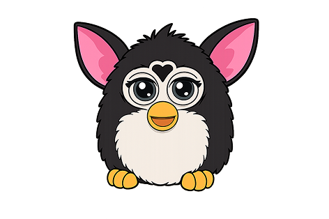

1980-OGGI - ERA DEI FENOMENI GLOBALI
FURBY
Alla fine degli anni '90, il mondo dei giocattoli ha vissuto un momento di vera fantascienza. Il Furby, una creatura a metà tra un gufo e un criceto, non era solo un peluche: era un concentrato di sensori e intelligenza artificiale primitiva che sembrava avere una vita propria. È stato il primo giocattolo capace di "evolversi" in base all'interazione con il suo proprietario.
LA MAGIA DEL ''FURBISH''
La caratteristica più incredibile del Furby era la sua capacità di parlare.
- Il Linguaggio:Appena uscito dalla scatola, ogni Furby parlava solo il Furbish, una lingua inventata fatta di suoni buffi.
- L'Apprendimento:Più tempo passavi a parlargli e a coccolarlo, più il Furby iniziava a inserire parole in italiano (o nella lingua del proprietario) nelle sue frasi. Questo dava l'illusione che il giocattolo stesse davvero imparando a comunicare con te.
- Personalità Reattiva:Grazie ai sensori sulla testa, sulla pancia e sulla schiena, il Furby reagiva al solletico, alle carezze e persino alla luce, chiudendo gli occhi per dormire quando la stanza diventava buia.



UN SUCCESSO SENZA PRECEDENTI
Il Natale del 1998 è ricordato come il "Natale del Furby". La richiesta era così alta che i prezzi schizzarono alle stelle e i negozi finirono le scorte in pochi minuti.
- Tecnologia Accessibile: Il Furby ha portato la robotica avanzata fuori dai laboratori e la ha messa nelle mani dei bambini, rendendo la tecnologia "calda" e affettuosa.
- Comunicazione tra Simili:I Furby potevano "parlarsi" tra loro tramite un sensore a infrarossi nascosto dietro il loro terzo occhio, cantando canzoni in coro o scambiandosi battute, un dettaglio che all'epoca sembrava pura magia.

UN'ICONA CULTURALE'
Nonostante il suo aspetto dolce, il Furby ha generato leggende urbane e persino preoccupazioni governative. La sua capacità di "imparare" era così convincente che molti credettero potesse registrare conversazioni reali, rendendolo un ospite chiacchieratissimo in ogni salotto.